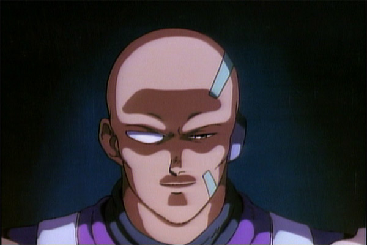
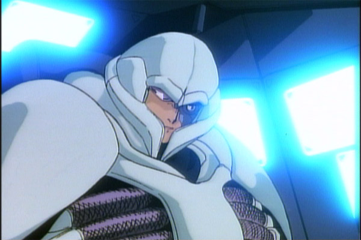

Movie review by : SFAM
Year : 1988
Directed by : Kazuyoshi Katayama
Written by : Kazuyoshi Katayama, Masamune Shirow (manga)
Degree of Cyberpunk visuals : Medium
Correlation to Cyberpunk themes : High
Rating : 7/10
Key cast members :

Overview: Released the same year as Akira, this Masamune Shirow story is far more an artifact of 80s Anime, whereas Akira points the way to how anime will look in the 90s. This early Mecha movie is violent, profanity laden and action packed, with a really nice story and interesting philosophical undertones. And interestingly, this is one of the very few animes where the English track is actually the best one.
The Story: Appleseed takes place in a dystopian future, in which a city called Olympus has been engineered to be a created as a perfect refuge from the rest of the world. Many of the inhabitants have been bio-engineered "biodroids", which are half-human, half-cyborgs designed to serve specific roles in the society. An all-powerful computer named GIA controls all city functions, and is just now starting to become responsible for the defense systems. Olympus is so controlled that there is little diversity or struggles required from its inhabitants.

A cyborg terrorist named Sabastian has made it his mission to destroy GIA. He finds a kindred soul in a disenchanted police officer, who's wife committed suicide after she couldn't stand living such a controlled existence. They plot to take over the prototype impenetrable tank in order to kill Gia and destroy Olympus. The movie centers around the mecha-laden Swat police force aligning their forces to stop them. In addition to heavy violence, we get MASSIVE amounts of F-bombs dropped here. Its actually rather cool seeing the amount of profanity that is used here - far more than one would expect from an anime such as this.
Deunan, a hot police chick and Briareos, a bug-like looking cyborg are Swat team members assigned to stop the terrorists. Incidentally, these two are clearly the precursors for Major Motoko Kusanagi and her cyborg partner, Bateau. While Deunan keeps her clothes on and doesn't have Motoko's intelligence, she definitely fills the same roll. Spunkiness is her middle name. The rest of the group, including Sebastian the terrorist, and the rest of the police force all provide decent support.
The animation here is still mostly 80s american style. Additionally, unlike the anime of the 90s, the backgrounds are often single, simple colors. While some animation scenes are rather cool, others are really more simple than you'd want. Definitely, the majority of the animation effort is about highlighing Dunan - she definitely looks better than everything else around her. Also, the sound is 80s keyboard music. Sometimes it works, but mostly it's just distracting.
There are a number of messages that Appleseed puts forth. Looking at it today, the most disturbing message deals with Olympus' rather extreme attempts to protect and inculcate itself from outside terrorists. The symbol for this is a bird in a cage. Considering that the US is in the throws of working this exact issue, Appleseed gives us a stark reminder that we can easily lose the soul of our society while attempting to protect it. Additionally, there are somewhat brief inquiries into what "life" is when examining whether biodroids should be valued similar to humans.
The Bottom Line: Appleseed is a good example of very early Japanese anime. While its nowhere near the top in terms of animation, the Masamune Shirow's story is high quality. Truly, the story is why you want to watch this. While the 2004 version definitely wins out on superior graphics, I think the 1988 version is a tighter, more interesting storyline. And if you've read the Applesead manga, then the story, especially the beginning, works far better. You will find yourself becoming connected to the lead characters. But most impressive is the pacing. Appleseed packs an incredible amount of story in 68 minutes - truly, there's very little fat here.